Benchmark / Datasets / s2-l1c-60m-3
s2-l1c-60m-3
Sentinel-2 L1C, aerosol, water vapour and cirrus bands at 60 m.
Source
Earth Engine COPERNICUS/S2, the Level-1C top-of-atmosphere product as distributed by ESA. COPERNICUS/S2_HARMONIZED is not used, because it subtracts 1000 and sets valid values at or below 1000 to the NoData value 0.
Sample
3 bands (B1, B9, B10) of 512×512 pixels at 60 m, on the native UTM grid of the granule.
Representation
Level-1C digital numbers as uint16. NoData is 0. Since processing baseline 04.00, reflectance is (DN + radio_add_offset) / 10000; the manifest lists radio_add_offset per band.
Licence
Copernicus Sentinel data 2023, under the Copernicus data policy. Required attribution: "Contains modified Copernicus Sentinel data 2023."
Lossless results · Near-lossless results · Folder on GitHub
Samples
 s2-l1c-60m-3-00
s2-l1c-60m-3-00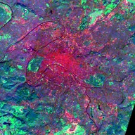
s2-l1c-60m-3-01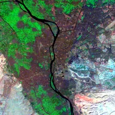
s2-l1c-60m-3-02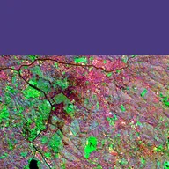
s2-l1c-60m-3-03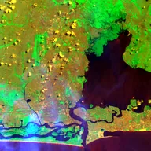
s2-l1c-60m-3-04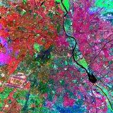
s2-l1c-60m-3-05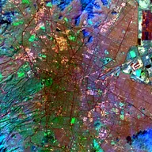
s2-l1c-60m-3-06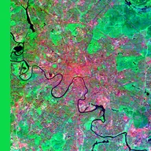
s2-l1c-60m-3-07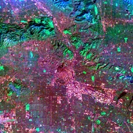
s2-l1c-60m-3-08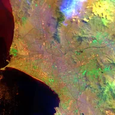
s2-l1c-60m-3-09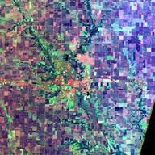
s2-l1c-60m-3-10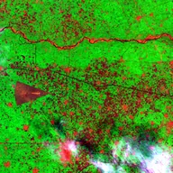
s2-l1c-60m-3-11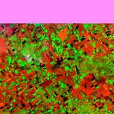
s2-l1c-60m-3-12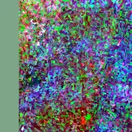
s2-l1c-60m-3-13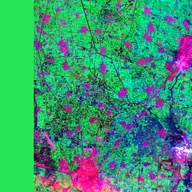
s2-l1c-60m-3-14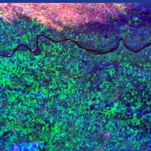
s2-l1c-60m-3-15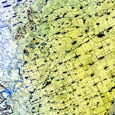
s2-l1c-60m-3-16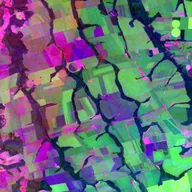
s2-l1c-60m-3-17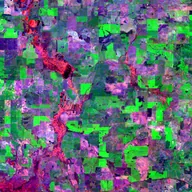
s2-l1c-60m-3-18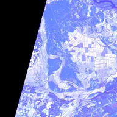
s2-l1c-60m-3-19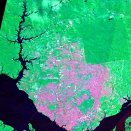
s2-l1c-60m-3-20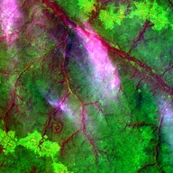
s2-l1c-60m-3-21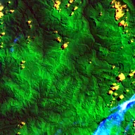
s2-l1c-60m-3-22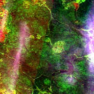
s2-l1c-60m-3-23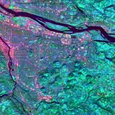
s2-l1c-60m-3-24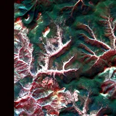
s2-l1c-60m-3-25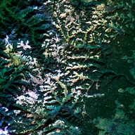
s2-l1c-60m-3-26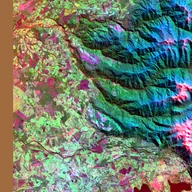
s2-l1c-60m-3-27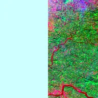
s2-l1c-60m-3-28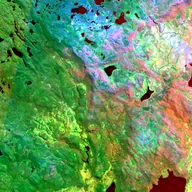
s2-l1c-60m-3-29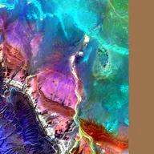
s2-l1c-60m-3-30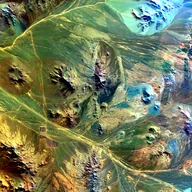
s2-l1c-60m-3-31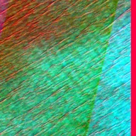
s2-l1c-60m-3-32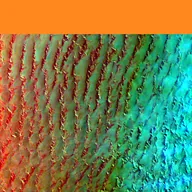
s2-l1c-60m-3-33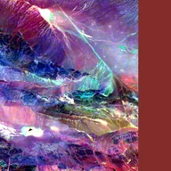
s2-l1c-60m-3-34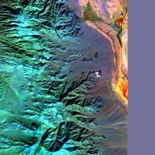
s2-l1c-60m-3-35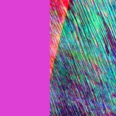
s2-l1c-60m-3-36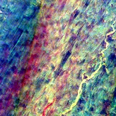
s2-l1c-60m-3-37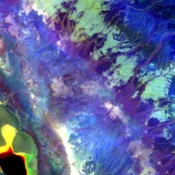
s2-l1c-60m-3-38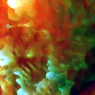
s2-l1c-60m-3-39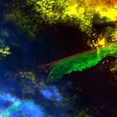
s2-l1c-60m-3-40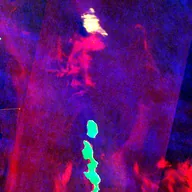
s2-l1c-60m-3-41s2-l1c-60m-3-42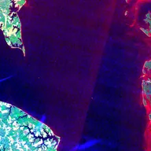
s2-l1c-60m-3-43s2-l1c-60m-3-44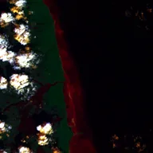
s2-l1c-60m-3-45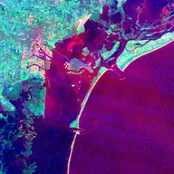
s2-l1c-60m-3-46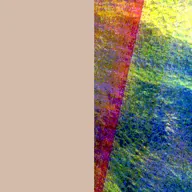
s2-l1c-60m-3-47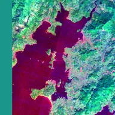
s2-l1c-60m-3-48s2-l1c-60m-3-49